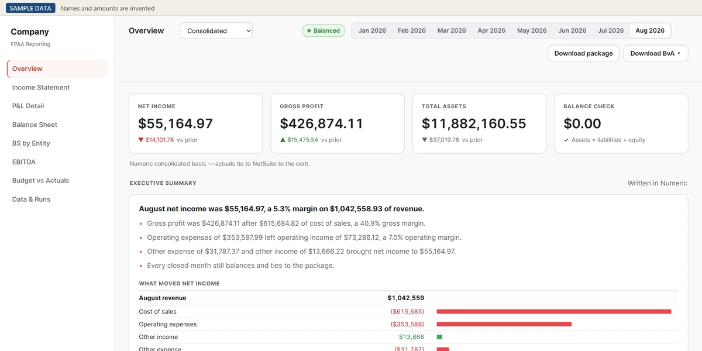
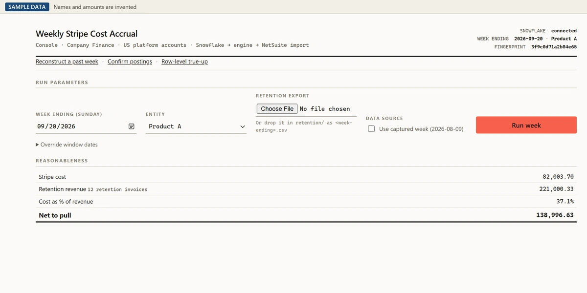

Franco Nidea
I'm a Senior Financial Analyst at TixTrack, with ten years in accounting and revenue operations. Most of my job now is building the automations that run our reporting and reconciliations, and making sure the numbers they produce are right.
I'm looking for finance systems, finance engineering and finance automation roles, where I get to be more of a builder, automating finance processes.
Get in touch: franco.nidea@gmail.com · LinkedIn
<30 min
down from 4 hrs a week
Weekly Stripe reconciliation, start to finish. Month-end weeks took 6.
<5 min
down from 30 min
Each re-run of the monthly reporting package after close
100K+
lines a week
Stripe transactions reconciled across five timezones
~400 hrs
a year
Manual work now automated: the weekly Stripe payout process, invoicing and payments included, and the reporting package
Case studies
I look for recurring work where something could get missed, where time could come back, or where the same errors keep needing adjustments. The requirements come from whoever uses the output, and my VP gives me room to choose what to take on. A build is done when its numbers tie back to the source and, where there's an old process, when it has run next to it long enough to trust.
I decide what each automation has to produce and I check its output against the source data. For my newer automations, Claude, an AI coding tool, writes the code. The numbers come from fixed rules, not the AI, and a person reviews anything before it reaches leadership.

Reporting package
The thirty-minute re-run
Every time something changed after close, I had to rebuild the monthly reporting package, and that took me 30 minutes. Now a re-run takes under 5, and every closed month this year has balanced and tied to our close platform.
NetSuite, Numeric, Python

Stripe reconciliation
Three versions of one weekly reconciliation
Our weekly Stripe reconciliation took me 4 hours a week by hand, 6 at month end. I got it under 30 minutes in KNIME, and now I'm testing a console I specified that runs 16 checks before the journal entries goes to NetSuite.
Snowflake, KNIME, Python, NetSuite
Personal projects
Experience
-
Senior Financial Analyst II · TixTrack Sept 2026 to now
TixTrack makes ticketing software for theaters and performing arts venues, and most of its revenue comes from per-ticket fees and commission on card payments. I own the vendor budget and the quarterly reforecast, and I'm building the revenue inputs for the 2027 budget that goes to the board. The plan is for my role to move fully into FP&A, covering budgeting, the rolling forecast and budget-vs-actuals reviews. I'm also on the team moving us to an AI-native ERP, with go-live planned for January 2027.
-
Senior Financial Analyst · TixTrack Sept 2025 to Sept 2026
I build the automations behind our monthly reporting and weekly Stripe reconciliation. The reporting package used to take 30 minutes a run and now takes under 5.
-
I built a three-way check on booked commission revenue in SQL that caught underbilling to clients, and dashboards that give leadership revenue and margin by client. I've also coached senior accountants on automating their own work.
-
Accountant · TixTrack 2024 to 2025
I automated the weekly Stripe to NetSuite reconciliation. It took 4 hours a week by hand, 6 at month end, and now takes under 30 minutes, start to finish. I also carried out the move of payout accounting from cash to accrual, with period cutoffs that work across five timezones.
-
Sales Development Representative · Airbase 2022 to 2023
I sold finance automation to CFOs and controllers, and generated $2.2 million in pipeline.
-
Accountant · Vesta Healthcare 2021 to 2022
Accounts payable, month-end reconciliations and flux analysis across 15 entities in NetSuite.
-
Accounting & Operations · A & H Co. 2018 to 2021
I ran billing, collections, cash flow and vendors, and led an order-to-delivery project that lifted gross revenue 15%.
-
Accountant · KRD Imports 2014 to 2018
Full-cycle accounting for a $60 million importer with offices overseas.
How I got here
I spent most of my career in accounting, and for a few years I also helped run a small family business. We had the operations and accounting covered, but not the sales and business development.
Later, to fill that gap, I took a sales role at Airbase. I was interested in what they were doing, consolidating finance tools and automating the work, and I wanted to get better at communicating. Selling to CFOs and controllers taught me to listen for the pain point first, and that's still how I decide what to automate.
When I joined TixTrack in 2024, a lot of the weekly work was manual. Every Monday someone copied last week's invoice in NetSuite for each of our 100-plus clients and typed in the new amounts. It took more than two hours because every invoice had to be double-checked, and a mistake in one week got copied into the next. I never timed it exactly.
The next week I realized NetSuite had a CSV import, so I built a template for it. Now it takes minutes.
Applying customer payments to those invoices against Stripe data was done by hand too, so I built a template for that as well. Then we moved our Stripe payouts from cash to accrual, and I designed that whole weekly process myself, from which Stripe report to use to the import files for every entry.
From there I kept going. I went from Excel to Power Query, then SQL so I could write my own queries, then KNIME. While I was on parental leave I kept reading about how AI was changing finance work, and I felt like I was getting left behind. When I got back we had a Claude plan, and the sky was the limit.
I really enjoy this work, and I think in a few years finance people who can't use AI are going to have a hard time finding a job.
Tools and education
Tools
- Data and reporting
- SQL (Snowflake) · Power Query · Excel · Tableau · KNIME
- Finance systems
- NetSuite · Stripe · Numeric
- AI
- Claude Code
Education
- BA in Accounting
- CUNY Queens College
- Digital Excellence Executive Program
- Tuck School of Business at Dartmouth